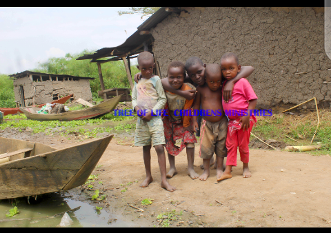

Tree of life children ministries concentrates on orphans and needy ones in the community and other parts of the country , Tree of life children ministries is registered as a community based, multi purpose, and development group for orphans. It is regardless of race age, religious or ethnic background to provide basic accommodations, nutrition, education and to teach them the ways of the Lord so that their morals can be in the ways of fearing God.How to obey His only son Jesus Christ .
Tree of life children home is a place where destitute children feel at home as they learn in Home-Schools environment. The community we serve has a population of over 500,000 (A large number of them are children). One third of the population is infected with HIV/AIDS. We are doing something to help, so people do not die without hope and smile.
We share the love of Jesus, as demonstrated in His Living Word. In a hands on, practical way.
COMMUNITY God values relationships. He want you to be part of a community where people support and encourage children empowering them. The Bible shows us that Adam, the first man God created, experienced loneliness even though he was with God. Your faith has to be more than just between you and God. It needs to be lived out in the support, fellowship, and encouragement found in community with others. A Word From the Director I started Tree if children charity Ministries International (TOLCM) in 2016. What started as small with 2 as i disciple in different communities i found many children in the streets in villages then continued to add at my rented home , added up to 15, by the power of the Holy Spirit into a ministry
My hope because this place very small and these children don't study encompassing a network of a Bible school, children's homes (orphanage), primary education, a medical assistance , constant evangelistic outreaches, farming and much more. If i get a chance you and me can make a world a better place for theses little children to live in.
Therefore in July 2017, me as the founder i had gone through the agony of losing one of my parent and other relatives because of HIV/AIDS while I was still young I felt the God’s calling of doing his work and serve him through this orphanage ministry where by I could help other children who are motherless and father less Had been individually disturbed by the plight of many children in my community of Mityana, mubende Uganda, who had been neglected or abandoned and had no one and nowhere to turn to for help. After ,so I created a space in our home to share what we had with the orphaned children here in my community. I would not live to see
children suffer after losing parents but would accommodate and live with them .This is where i stepped out in faith to minister to the needs of the orphans , vulnerable children and families in my community. I had nothing but a small house where i started with five (2)
children(orphans), who had been abandoned by their guardians . my prayers to bring a smile and new opportunities to hundreds of children in my community.
Since Tree of life children Ministry and orphanage Uganda started in 2016 to shelter and educate children, it has undergone huge transformation and we are hoping to increase the number of children if we get Support and help from you. So we accommodate, and improve in the Education if we build our home and School. make farming for to feed the children so to ensure a sustainable future for the ministry and children . I want to use this ministry to help more children here in my community and other communities.
Bible The Bible is an important way to hear God’s voice in your life. as Hosea 4:6(knowledge of God more important children to grow with) and It’s our primary authority for what we believe, a history of faith and truth, and a library of God’s story with us. It shows us how God and Jesus wants us to live and love others. Most importantly the Bible is God’s love letter to you.
WE BELIEVE in the person of God the Father, infinite and eternal, perfect in holiness, wisdom, power and knowledge; who concerns Himself mercifully in the affairs of men; who hears and answers prayer, and who is love and loves all people freely.
WE BELIEVE in the in our lord Jesus Christ, God’s only begotten son, who gave all his life to save the world who was conceived by the Holy Spirit and born of a virgin birth. We believe in His sinless life, miracles, teachings and intercession for His people.
 WE BELIEVE in the person of the Holy Spirit, who came forth from the Father and Son to convict the world of sin; who indwells every believer in Jesus Christ; who is an abiding helper, teacher and guide. We believe in the fruits of the Holy Spirit and that the gifts of the Holy Spirit are active today.
WE BELIEVE in the gospel message of redemption as presented in the Bible, that:
All men were created in the image of God, but have sinned by nature and choice.
The wages of sin are death – a separation from God.
God demonstrates His love for us, in that while we were yet sinners, Jesus Christ died on the cross and shed His blood for the forgiveness of our sins and our eternal salvation. We believe He was buried, rose again on the third day and ascended into Heaven where He is seated at the right hand of God the Father.
By grace we are saved through a personal faith in the Person and works of Jesus Christ and not anything we can do on our own.
WE BELIEVE in the resurrection of both the saved and the lost, they who are saved unto the resurrection of life in Heaven and they who are lost unto the resurrection of damnation in Hell.
WE BELIEVE in the spiritual unity of all believers in the Lord Jesus Christ, as members of His body, the Church.
WE BELIEVE that God has a special covenant relationship with Israel and the Jewish people from all nations. We believe that God’s national, spiritual and future promises to the nation of Israel are literal, irrevocable and eternal.
WE BELIEVE that God has placed today a day for you to meet us and support us you are Heaven sent to save us physically and spiritually because we need your prayers too. And we believe that human life is sacred from conception to its natural. Thank you God.